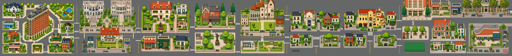
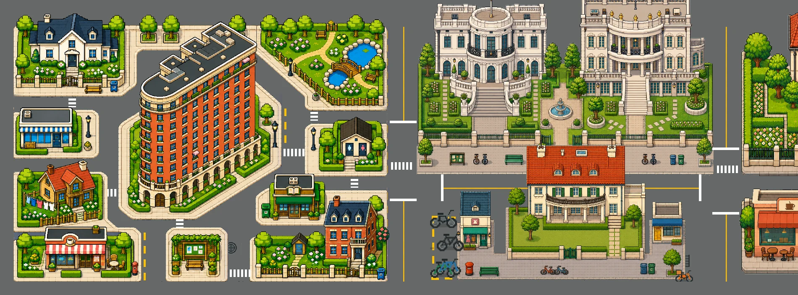

徐汇数字街区AIGC Workflow
把一组各自成立的建筑画面，组织成能够共同构成街区的视觉语言。先看地图，再走近每一个模块。


西段 · 建筑、花园与道路的组合
01 / MAP EVOLUTION
同一张地图，
持续寻找更合适的表达。
项目在教学反馈与实际展示需求之间持续调整。先看三个有日期线索的地图版本，再切换局部观察布局、建筑风格、细节密度和道路关系。日期只说明版本先后，不代表某条老师意见恰好对应某次修改。
点击任一日期或全景图，切换下方的局部观察。
2026.08.10 / 局部观察
2026.08.10 · 左段局部手机可横向滑动细看 · 点击图片查看完整局部 ↗
全景保留各版完整布局。三个版本的建筑位置与组合不同，局部用于观察视觉变化，不视为同一建筑位置的严格对照。这里展示的是持续探索，未编造逐次评审记录、修改次数或老师原话。
02 / THE VISUAL SYSTEM
建筑各有性格，
画面有共同秩序。
我参与这组素材的 AIGC 图像生产、人工质量审核和视觉迭代。单体建筑的辨识度，与街区组合后的整体一致性，需要被放在同一条工作线上考虑。
建筑单体 · 透明边缘处理版本
建筑单体 · 透明边缘处理版本
建筑单体 · 透明边缘处理版本
建筑、道路与绿植的组合
连续街道与建筑群的关系
03 / BUILDING TO BLOCK
从独立建筑，
走向可以一起使用的街区。
以武康大楼这一可辨识主体串联素材：早期单体强调建筑质感，后续模块加入周边小屋、花园与道路，再继续处理路面与边缘。主体轮廓、转角关系和透视仍需在风格化过程中反复校对。
20260809裁切透明边缘 · 弧面、檐口和窗格构成单体辨识度。
20260903街区模块 · 加入周边小屋、庭院与道路，探索更轻松的游戏化组合。
20260904统一马路 · 同一模块的路面灰度处理，主体组合延续。
统一马路 / clean · 去掉外侧底色、调整有效边缘，为后续拼接提供可用轮廓。
以上选四份素材作为对照，不代表全部迭代次数。两组滑动对照用于观察素材差异；clean版画幅与裁切范围不同，居中展示并非像素配准。边缘可用性仍需在相邻模块拼接后继续检验，不能仅凭单块就判定已无接缝。
同一单体的风格与边缘处理
另选一组对应的生成图、pixelated版与透明裁切版。保留整体主体，同时观察像素颗粒、细节密度和背景边缘如何影响后续组合。
原始候选 · 保留底色与完整画幅
pixelated · 比较轮廓与颗粒变化
pixelated_clean · 比较外侧底色与有效范围
窗格、屋顶和立面细节可点击放大检查。清晰的单体与局部只是大屏细节审核的材料，不意味着已经完成大屏验收或正式展出。
04 / FEEDBACK & EXPLORATION
把反馈变成
可观察、可继续
修正的画面问题。
以下是已知反馈方向的归纳，与现有素材中的可见变化联系起来；不是逐次评审原话，也不表示某项要求已经获得最终认可。
- 01减轻厚重、复古的感觉早期地图偏低饱和与土黄底色；后续地图采用更明亮的绿植、小屋与块面关系，继续探索整体轻重。对照三版地图 ↗
- 02增加轻松、游戏化的感觉独立建筑逐步进入由花园、商店、小屋和道路组成的模块，画面组织向游戏地图的可读性靠近。查看单体到模块 ↗
- 03提升建筑、道路与材质细节比较同一模块的窗格、屋顶、绿植与路面；该路面样本由蓝灰向中性灰调整，细节与材质层次仍需独立检查。比较路面与边缘 ↗
- 04保持既定透视与主体轮廓保留可辨识的弧面、转角和建筑关系，同时继续校对体量与观察角度。风格变化并不等于可以任意改形。查看可比建筑 ↗
- 05改善边缘裁切与相邻模块拼接生成图、像素版和透明裁切版可看出背景与有效范围的处理；模块是否连续，仍需回到整张地图中检查。查看裁切对应图 ↗
- 06提升大屏观看的细节质量通过整体、模块和单体的不同尺度检查立面与路面细节。当前保留局部放大入口，后续仍需结合实际大屏需求复核。切换局部观察 ↗
05 / WORKFLOW
人做判断，
流程承接重复操作。
在图像生产之外，我也参与 Python 图像拆分与合并工作流。这里呈现工作流的组织思路，重点是让素材能够在单块处理与整体检查之间来回迭代。
- 01
生成候选
围绕同一视觉方向形成可供选择的建筑和街区图像。
- 02
人工筛选
观察结构、风格和构图，保留适合进一步处理的画面。
- 03
视觉修改
结合版本，处理像素感、边缘和路面等画面问题。
- 04
组合与复核
回到街区组合，检查尺度、衔接和整体视觉关系。
Python 拆分 / 合并
图像输入 → 按区域拆分 → 单块处理与审核 → 合并回看 → 继续迭代
以上为参与流程的示意说明。当前素材中没有对应源码，具体拆分规则、参数及运行记录待补充；不主张已审阅源码或量化的效率提升。